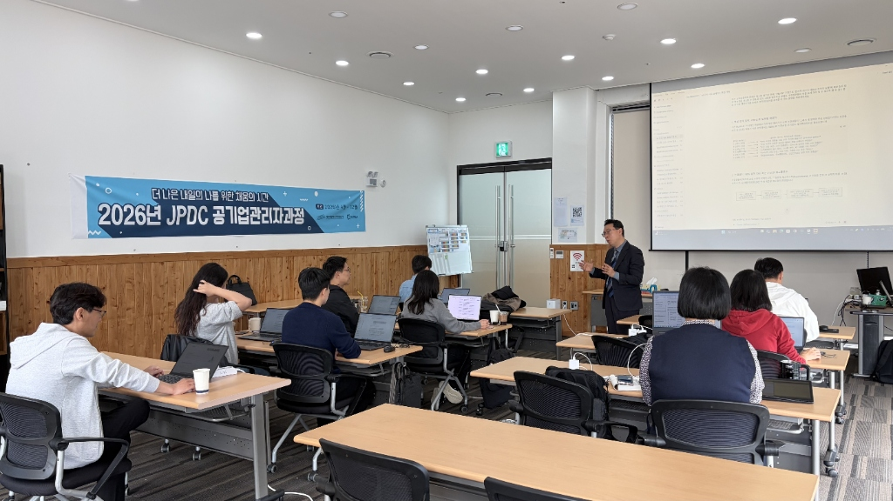
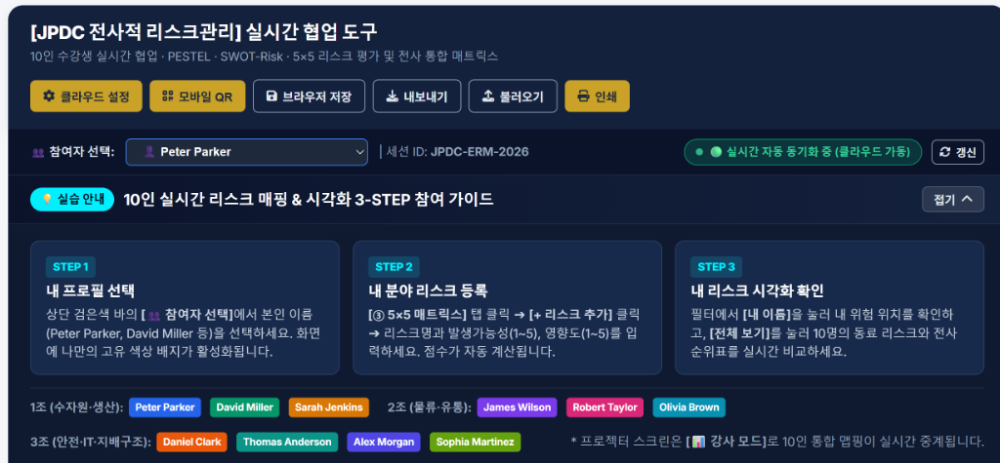

1. 공허한 AI 구호와 '사일로(Silo)'에 갇힌 사무직의 현실
인공지능 기술의 진보는 눈부시지만, 기업의 의사결정 현장으로 한 걸음 들어가 보면 기이한 단절이 목격된다. 경영진은 '전사적 AI 도입'을 선언하지만, 관리자와 실무진이 마주하는 일상은 10년 전과 크게 다르지 않다. 사내 공용 서버에는 버전 관리가 되지 않는 수백 개의 엑셀 파일이 엉켜 있고, 각 부서의 핵심 분석과 리스크 진단 데이터는 개별 담당자의 로컬 폴더 속에 폐쇄적으로 잠들어 있다.
이른바 '데이터 사일로(Data Silo)' 현상이다. 기존의 시스템 구축(SI) 방식은 수개월에서 수년의 개발 기간과 수억 원의 라이선스 비용을 요구하지만, 프로젝트가 완료되는 시점에는 이미 현업의 요구사항과 비즈니스 환경이 변해버린다. 사무직군에 진정으로 필요한 것은 무거운 엔터프라이즈 ERP가 아니라, "지금 내가 다루는 로컬 데이터를 즉시 살아있는 형태로 시각화하고 동료들과 실시간 공유할 수 있는 민첩한 도구"다.

2. 패러다임 전환: "저비용·초신속 데이터 생산과 실시간 동기화"
그렇다면 사무직군에서 AX를 가장 성공적으로 안착시키는 최적의 방안은 무엇인가? 답은 "데이터 생산과 유통의 한계비용을 '0'으로 수렴시키는 것"에 있다.
기존의 전사적 리스크 관리(ERM) 프로세스는 지극히 정적이었다. 부서별로 워드나 엑셀 양식을 배포하고, 취합자가 수십 통의 메일을 열어 복사·붙여넣기를 거듭한 뒤, 이를 다시 파워포인트로 가공해 보고하기까지 최소 수주의 시간이 소요되었다. 그 과정에서 데이터의 정시성(Real-time)은 상실되고, 위험 징후에 대한 '조직의 실행'은 한발 늦어질 수밖에 없었다.
"사무직군의 AX는 값비싼 외부 시스템을 설치하는 것이 아닙니다. 기존 서버와 개인 폴더에 흩어져 있던 원천 데이터를 가벼운 웹 아키텍처와 LLM 기반 지능형 파이프라인으로 연결하여, 누구나 저비용으로 즉시 대시보드를 생성하고 실시간 공유할 수 있도록 만드는 조직 내 '데이터 활성화(Data Activation)' 과정입니다."
3. JPDC 실증 사례: 10인 실시간 협업 도구의 3-STEP 아키텍처
이번 제주개발공사(JPDC) 특강에서 선보인 [JPDC 전사적 리스크관리 실시간 협업 도구]는 이러한 철학을 완벽하게 증명해낸 모범 사례다. 클라우드 웹 표준 기술과 WebSocket/MQTT 경량 브로커를 결합하여, 별도의 프로그램 설치 없이 단 1초 만에 모바일과 노트북에서 다자간 동시 동기화가 이뤄지는 인터랙티브 환경을 구현했다.
내 프로필 선택
상단 참여자 선택 바에서 본인 식별자 선택 시 고유 컬러 배지 부여. 개인별 책임성과 실시간 입력 주체를 명확히 시각화.
분야별 리스크 등록
PESTEL 및 SWOT-Risk 관점에서 발생가능성(1~5)과 영향도(1~5)를 다이내믹 폼에 입력, 즉시 5×5 리스크 스코어링 산출.
전사 통합 매트릭스 동기화
수자원·생산, 물류·유통, 안전·IT 등 조별 데이터가 강사 스크린 및 모든 참가자 화면에 0.1초 단위로 실시간 클러스터링.

특히 주목할 점은 조직 구조와 실무 롤(Role)의 정밀한 매핑이다. 1조(수자원·생산), 2조(물류·유통), 3조(안전·IT·지배구조)로 구성된 참가자들이 자신의 담당 영역에서 발생 가능한 Top Risk를 입력하는 순간, 전사 차원의 5×5 히트맵 매트릭스에 즉각 점들이 찍히며 '누가, 무엇을, 어떻게 대응해야 하는가'에 대한 우선순위가 실시간으로 가시화되었다.

4. 결론: "실시간 대시보드가 전사적 실행력을 완성한다"
이번 JPDC 공기업관리자과정이 남긴 가장 큰 시사점은, "보이지 않던 리스크가 시각화되는 순간, 조직의 실행(Execution)은 저절로 발동한다"는 점이다.
사무직 AX의 궁극적인 지향점은 거창한 기술 과시가 아니다. 기존에 캐비닛과 로컬 하드디스크 속에서 침묵하던 데이터들을 양지로 끌어올려, 팀원 모두가 동일한 관제 화면(Single Source of Truth)을 바라보며 합의를 이끌어내는 환경을 조성하는 것이다.
생성형 AI와 경량 웹 대시보드의 결합은 이제 소수 빅테크의 전유물이 아니다. 조직 내 사일로를 깨부수고, 저비용으로 현장의 지적 자산을 실시간 대시보드화하는 기민한 접근이야말로 대한민국 모든 공공기관과 기업이 즉시 도입해야 할 가장 확실한 '사무직 AX의 마스터키'가 될 것이다.